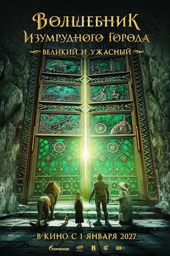

Волшебник Изумрудного города. Великий и ужасный 2027
Ураганом занесенная в волшебный мир девочка Элли, её пес Тотошка и их друзья — Страшила, Железный Дровосек и Трусливый Лев — добрались до заветного Изумрудного города. Но долгожданная встреча с Гудвином преподносит сюрприз: Волшебник обещает исполнить их заветные желания, если они раздобудут для него колдовскую бурю мстительной Бастинды. Элли и ее друзья отправляются навстречу новым приключениям в опасную и загадочную Фиолетовую страну. Им предстоит вмешаться в коварные планы злой ведьмы и столкнуться с ее приспешниками, Летучими обезьянами.
Открыть в каталогеДанные и постеры принадлежат их правообладателям. Этот продукт использует TMDB API, но не одобрен и не сертифицирован TMDB.